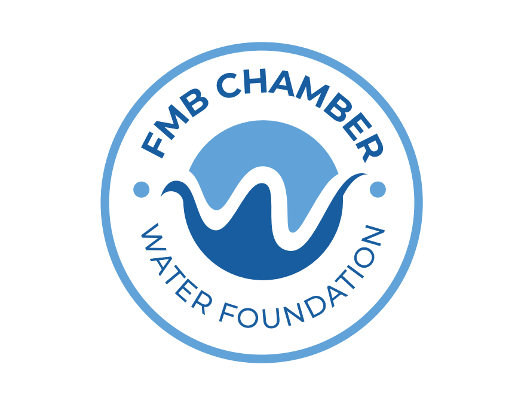

FGCU Community-driven water quality monitoring for Fort Myers Beach.
Join our community-driven water quality monitoring program!
What’s in the Water is a bi-annual citizen science initiative based on Fort Myers Beach, dedicated to improving community understanding of local water quality. Since 2019, the program has brought together volunteers from across the community to help collect water samples from 46 sites throughout the island.
The project is designed to make environmental data more accessible and locally relevant, while also increasing public awareness about the health of surrounding waters. Participants play an active role in the scientific process by assisting with field sampling alongside project organizers.
In previous years, the program has been hosted in partnership with Mound House. In 2026, it is supported through grant funding from the Fort Myers Beach Chamber Water Foundation and will be based out of The Mound House for the upcoming sampling event on Saturday, September 12th.
This effort is made possible through community involvement, and volunteers of all experience levels are welcome to participate in supporting local water quality monitoring and stewardship.
Sampling Sites
Community Monitoring
Science Driven
Watershed
Explore sampling locations across Fort Myers Beach.
Saturday, September 12, 2026
📍 Location: Mound House
451 Connecticut St, Fort Myers Beach, FL 33931
⏰ Pick-Up Time: 8:30 AM
⏱ Drop-Off Time: No later than 10:00 AM
See sampling instructions below
Register to Volunteer💧 FGCU Live Water Quality Sonde Dashboard
Real-time data stream supported by our regional partner SECOORA
View Live Data Download the Live Data (MyFGCU)Community-collected water quality data from previous sampling events.
Salinity was generally lower during September sampling, reflecting seasonal freshwater influence.
Nutrient concentrations were higher during September sampling, likely influenced by wet-season runoff.

Email: nweigold@fgcu.edu
Office: 239-745-4703